| 日付 | 2015年10月4日（日） |
|---|---|
| 山域 | 大菩薩 |
| メンバー | 単独 |
| アクセス | 電車 |
| ルート (Map) | 笹子駅 (7:08) - (7:41) 新中橋 - (8:57) 笹子雁ヶ腹摺山 - (9:42) 笹子峠 - (10:05) 中尾根ノ頭 - (10:47) カヤノキビラノ頭 - (12:07) ボッコノ頭 - (12:42) 大沢山 - (13:59) 稲荷神社 - (14:24) 笹子駅 |
中央道やJR中央線が笹子峠を越えると甲府盆地に入る。
笹子峠より北側は大菩薩連嶺、南側は御坂山塊と呼ばれている。
この2つの山塊を結ぶ知られざる尾根道が存在する。
道はあまり整備されておらず、ロングコースであるため、歩く人が少ないルートだ。
今回は笹子雁ヶ腹摺山に登った後、このマイナーコースを辿ってみようと思う。
早朝の笹子駅に到着する。標高605m。
登山の拠点となる駅で、過去に何度も来ている駅だ。
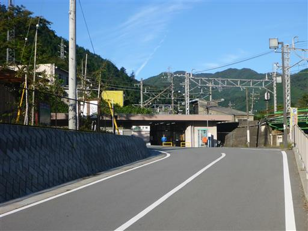
車道を歩いて登山口に到着する。
登山口は工事中で別の場所にあり、最初は気づかずに通り過ぎてしまった。
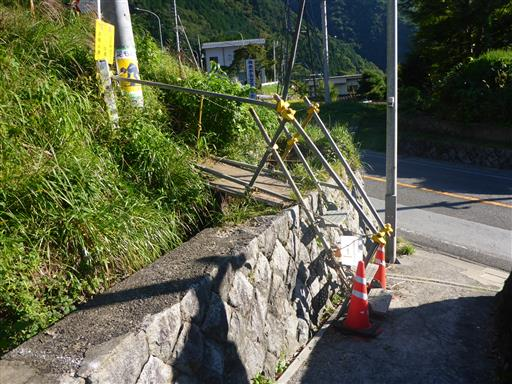
単調な尾根道を登って行く。
早朝のため、途中で2人組を追い抜いただけで、他に人は見かけない。
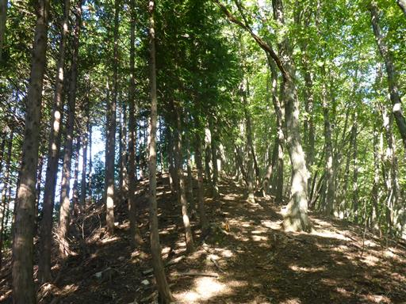
山頂直下に大きな電波反射板が立っている。
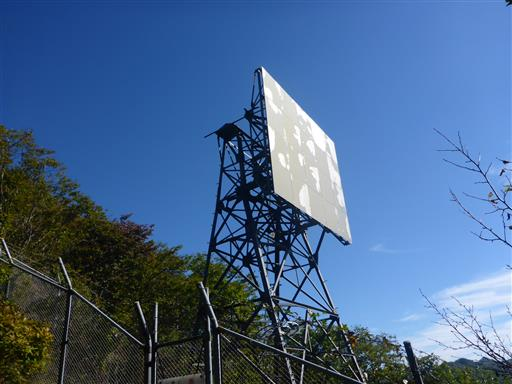
ここからは展望が開け、大きな富士山がよく見える。
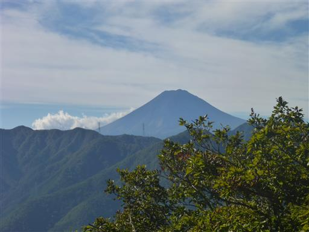
その他、道志の山々が見渡せる。この辺りは山が深い。

笹子雁ヶ腹摺山の山頂に到着する。標高1358m。
おそらく本日の一番乗りだ。
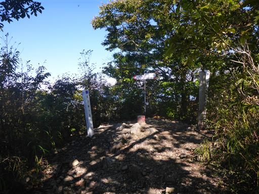
案外南アルプスが近くに見えている。白峰三山～甲斐駒ヶ岳が見えている。
富士山は樹木に隠れてこの季節は良く見えない。先ほどの反射板からの方が良く見える。
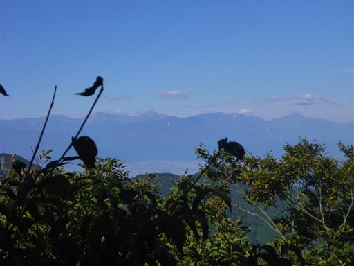
本日は行程が長いため、すぐに笹子峠へ向けて出発する。
最初は急坂の下りだ。
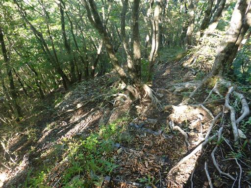
巨大な鉄塔が立っている。高さ100mを超える超高圧送電線の鉄塔だ。
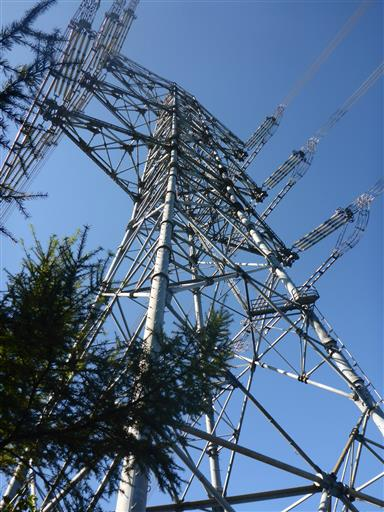
鉄塔のおかげで展望が広がるのだが、鉄塔が邪魔して富士山が見えない。
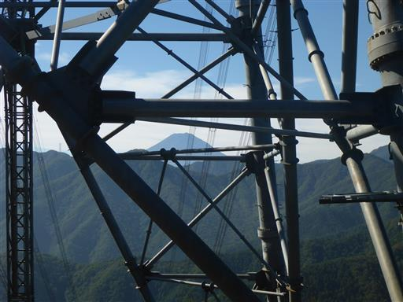
尾根道と巻道の分岐点。当然尾根道を選ぶ。
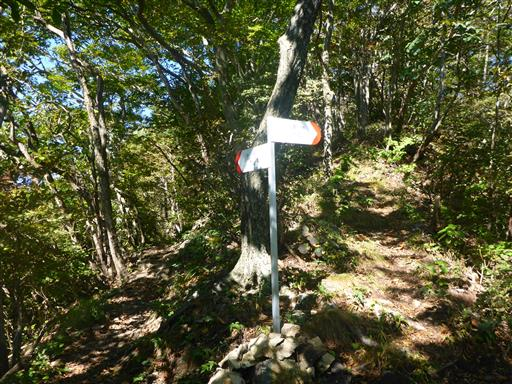
あちらこちらで土の堀返しが見られる。イノシシだろうか？
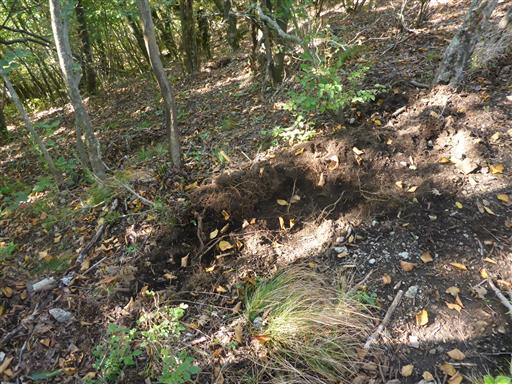
この辺りは急峻な地形で右側は崖だ。
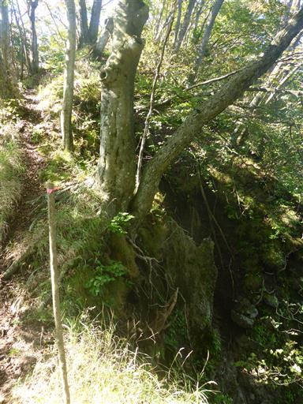
細かなアップダウンを繰り返して尾根が続いて行く。
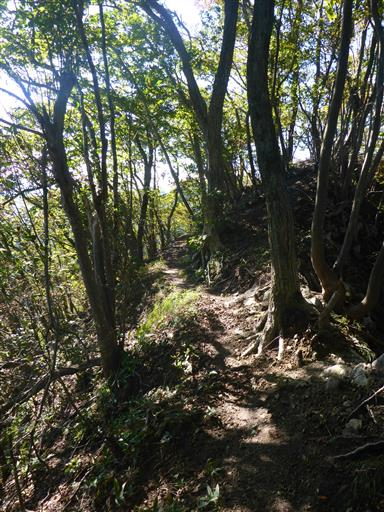
ヤドリギだろうか？頭上で良く見かけるが、こんな間近で観察できるのは初めてだ。
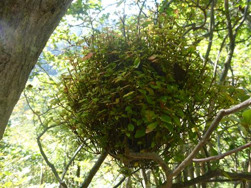
笹子峠に到着する。
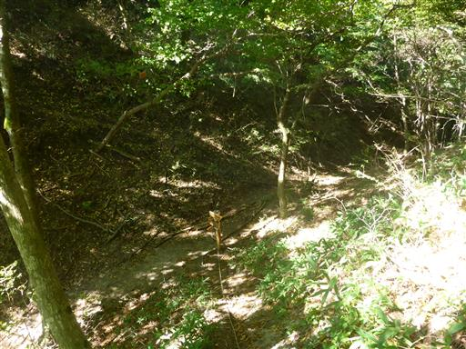
笹子峠を越える古の峠道。甲州街道の最大の難所とされた。
現在は車道も鉄道もトンネルが下を通っている。
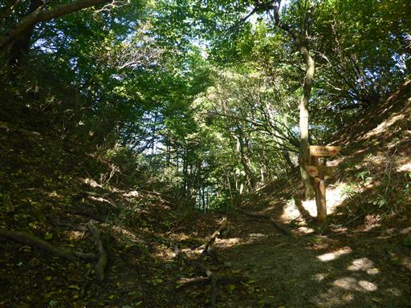
現在ここは登山道の十字路。各方面の行先を示す標識が立っている。
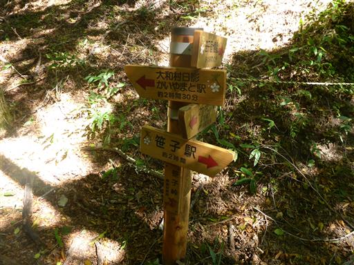
整備された道はここまで。ここから先は急に道が細くなる。
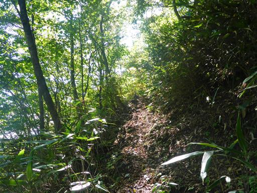
かなり急な坂を一気に登る。
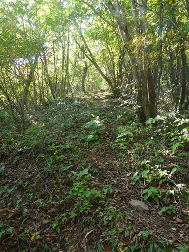
一登りで中尾根ノ頭に到着。標高1278m。
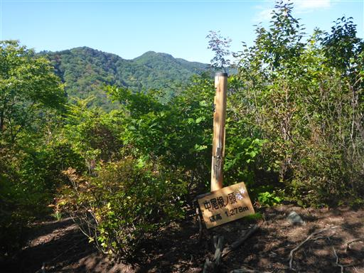
遠くに八ヶ岳が見える。
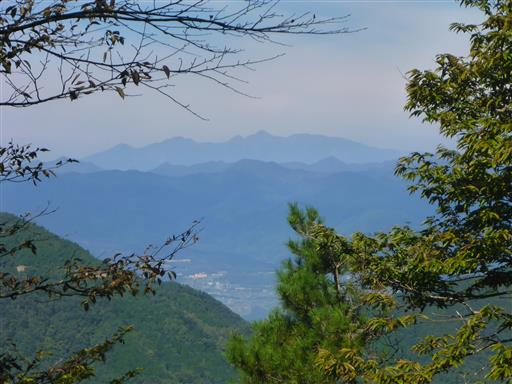
マイナールートだが案外、標識やベンチは整備されている。
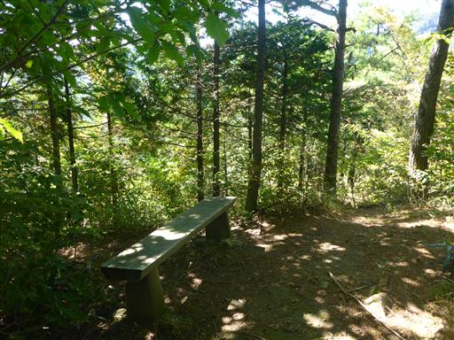
この辺りは崖が多い。木の根が蜘蛛の巣のようだ。
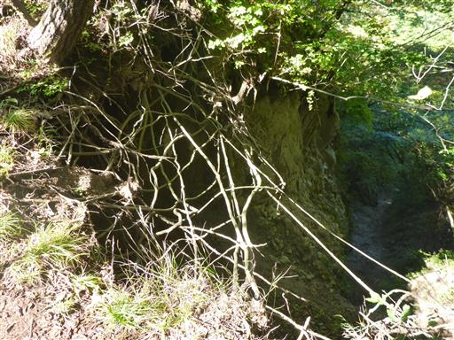
大菩薩連嶺方面の展望が開ける。長くて真っ直ぐな尾根だ。
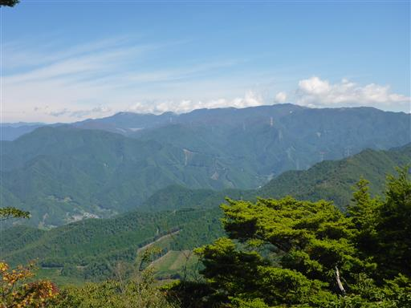
鉄塔の側にあるのが笹子雁ヶ腹摺山。右側の目立つピークは滝子山だ。
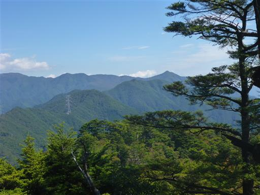
痩せ尾根が続く。
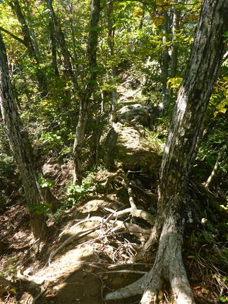
カヤノキビラノ頭に到着。達沢山への道との分岐点だ。
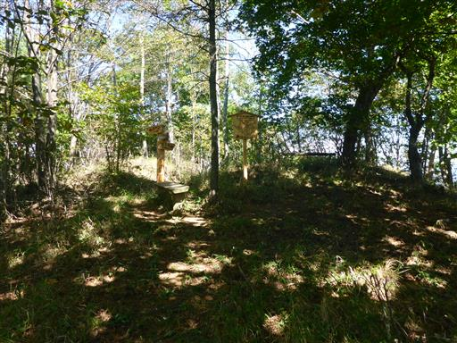
足元に栗がたくさん落ちている。
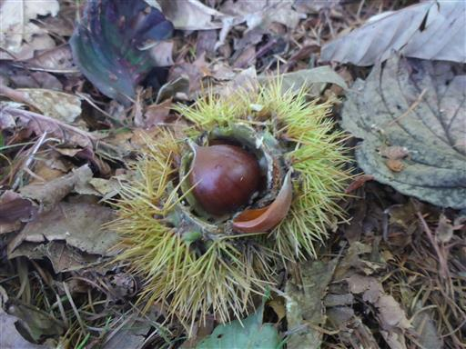
2種類の木がくっついている。
まったく別の種類の木だが、こんなに大きくなるまでよく共存できたものだ。
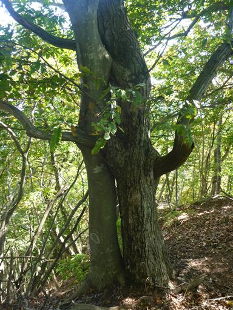
幹は完全に密着している。。
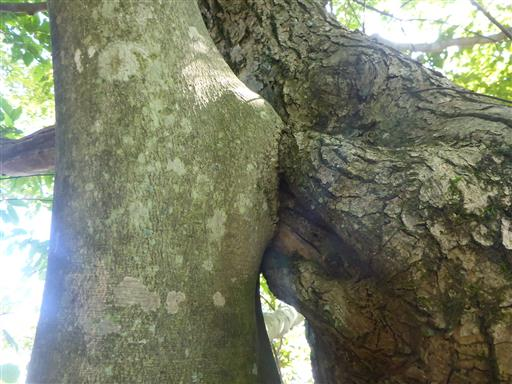
大洞山に到着。標高1402m。この辺りから道が分かりにくくなる。
今日は地形図を持ってこなかったが、持って来た方が良かった。
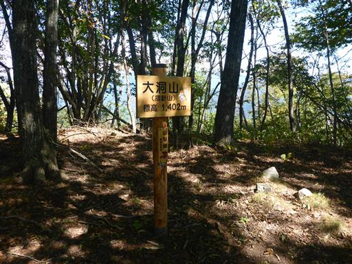
半分枯れて半分生きている木。
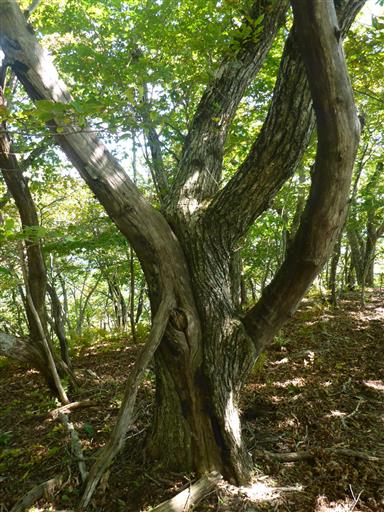
ボッコノ頭付近はトリカブトが多い。
この辺りは細かなアップダウンが続く。
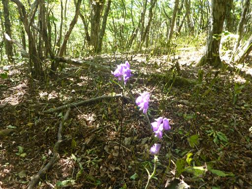
大沢山に到着。標高1460m。本日の最高峰だ。

下山道は道跡不明瞭と記載されている。
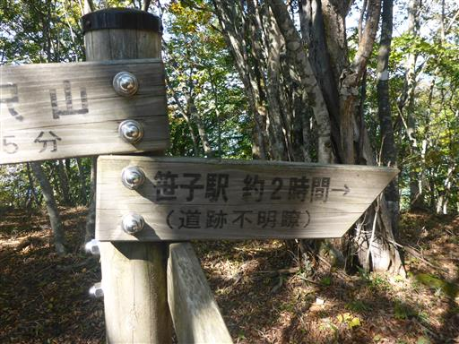
踏み跡は薄いが、分かりやすい尾根のため道に迷いそうな所は無い。
左足のかかとの上が靴と当たって痛い。完全に痛めると嫌なので、少しペースを落として歩く。
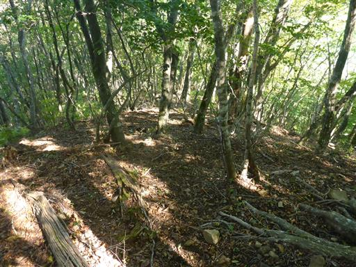
植林地帯に網がたくさん設置されている。何のためにあるのだろう？
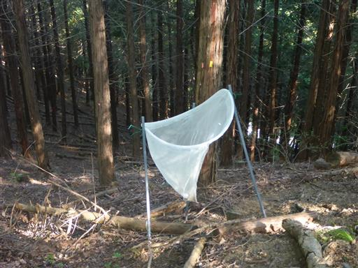
稲荷神社の裏に下山する。
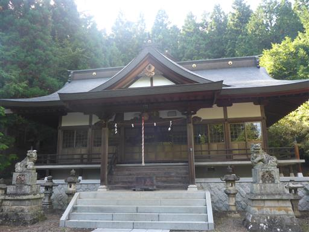
あとは笹子駅まで車道歩き。左足を庇いながらゆっくり駅に向かう。
さほど速く歩いた訳ではないのだが、結構疲れてしまった。
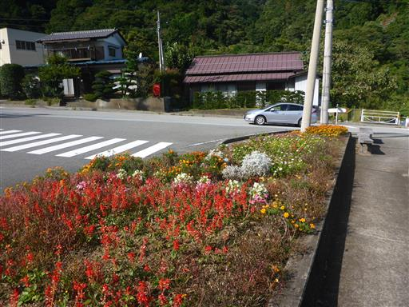